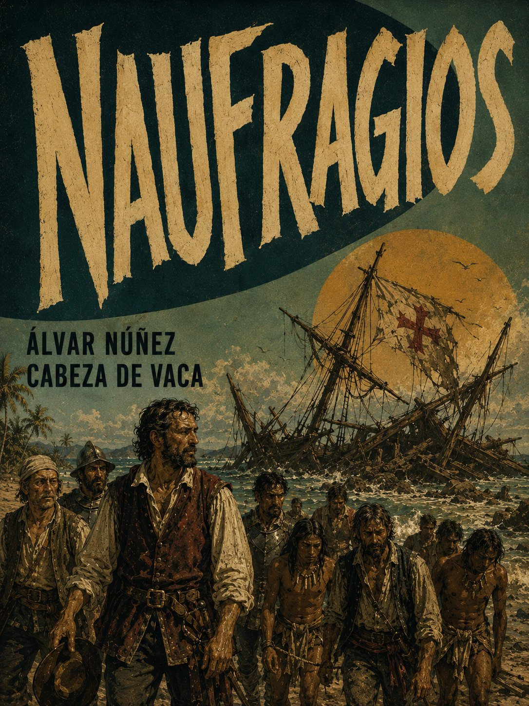
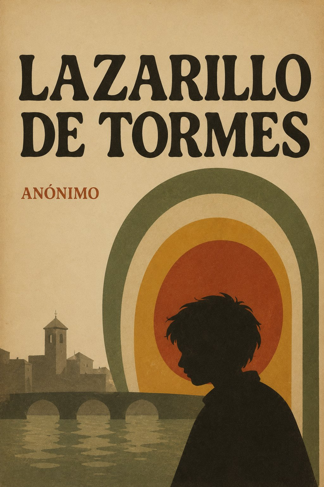
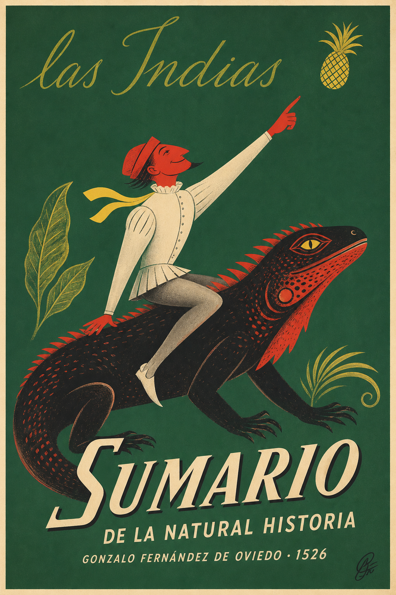
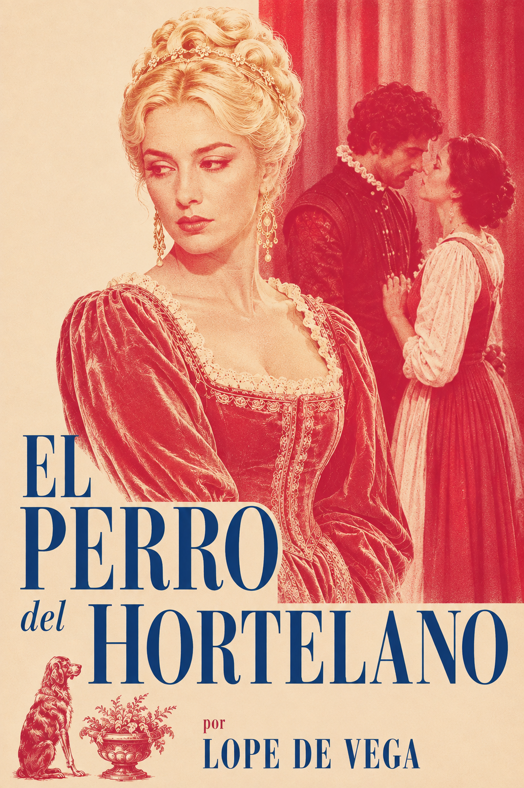

La Celestina
Resumen
Tragicomedia dialogada de finales del siglo XV que sigue la obsesión amorosa de Calisto por Melibea, orquestada por Celestina, la vieja alcahueta que da nombre a la obra. Puente entre el mundo medieval y el renacentista, célebre por su realismo psicológico y su desenlace trágico y moralizante.
Los cuatro viajes del almirante y su testamento
Resumen
Las cartas, diarios de a bordo y el testamento del propio Cristóbal Colón, documentando sus cuatro travesías atlánticas entre 1492 y 1504. Un relato de primera mano —y no poco interesado— del primer contacto con el Caribe y las negociaciones con la Corona que lo hicieron posible.
Brevísima relación de la destrucción de las Indias
Resumen
Denuncia testimonial de Bartolomé de las Casas contra las atrocidades cometidas por los colonizadores españoles en el Caribe y el continente, escrita en 1542 como petición directa a la Corona para reformar el trato a los pueblos indígenas. Un texto tan influyente como controvertido en la formación de la Leyenda Negra española.
Cartas de Relación
Resumen
Las cinco cartas que Hernán Cortés envió al emperador Carlos V entre 1519 y 1526, narrando en primera persona la caída de Tenochtitlan y la conquista del imperio azteca. Un relato tan fascinante como interesado: el propio conquistador construyendo, carta a carta, la versión de los hechos que quería que la Corona creyera.

Naufragios
Resumen
Álvar Núñez Cabeza de Vaca narra el desastre de la expedición de Pánfilo de Narváez y los ocho años que pasó vagando desnudo y cautivo por las costas y desiertos de lo que hoy es Florida, Texas y el norte de México, sobreviviendo como esclavo, comerciante y curandero entre los pueblos indígenas antes de reencontrar a los suyos en 1536. Publicada en 1542, es tan crónica de supervivencia como confesión de un hombre transformado por el contacto con un mundo que España apenas comenzaba a comprender.

Lazarillo de Tormes
Resumen
Novela picaresca anónima de 1554 que sigue a un niño pobre al servicio de una serie de amos —un ciego mendigo, un cura avaro, un escudero venido a menos— en una sátira mordaz de la hipocresía social del Siglo de Oro. Fundacional por su voz confesional en primera persona, irónica de principio a fin.
Comentarios Reales de los Incas
Resumen
Escrita por el hijo de un conquistador español y una princesa inca, esta crónica de 1609 entreteje la historia oral y la mitología incaicas con el relato de la conquista del Perú. Una de las primeras grandes obras de autoría mestiza, escrita desde ambos mundos a la vez.
Historia de la Monja Alférez
Resumen
La autobiografía de Catalina de Erauso, una monja vasca que escapó de su convento a los quince años, se vistió de hombre y cruzó el Atlántico para reinventarse como soldado en las guerras de conquista de Chile y Perú. Entre duelos, fugas y una identidad que mantuvo oculta durante casi dos décadas, su relato desafía sin proponérselo las categorías de género y santidad de la España imperial, hasta que el Papa mismo le concedió permiso para vivir vestida de hombre el resto de su vida.

Sumario de la Natural Historia de las Indias
Resumen
Gonzalo Fernández de Oviedo escribió este resumen en 1526 como adelanto de su monumental Historia general y natural de las Indias, encargada por Carlos V. Basado en años de servicio como funcionario colonial en el Caribe y Centroamérica, describe con ojo de testigo la flora, fauna, geografía y costumbres del Nuevo Mundo —la piña, el huracán, la canoa, la hamaca— introduciendo a los lectores europeos palabras y realidades hasta entonces desconocidas.
Novelas ejemplares
Resumen
Miguel de Cervantes reunió en 1613 doce relatos breves de la España contemporánea a su pluma, desde pícaros y gitanas hasta caballeros y damas de alta alcurnia, escritos, según su propio prólogo, para "entretener el ánimo" sin dejar "tropezón que tropiece" en la moral del lector. Títulos como "Rinconete y Cortadillo", "La gitanilla" o "El licenciado Vidriera" muestran a un Cervantes maestro de la narrativa corta, tan influyente para el género en español como el propio Quijote lo fue para la novela.

El perro del hortelano
Resumen
En la Nápoles aristocrática de su tiempo, Lope de Vega retrata a Diana, condesa de Belflor, que no ama a su secretario Teodoro pero tampoco soporta que otra mujer lo ame, como el perro del refrán que "ni come ni deja comer." Los celos y el orgullo de clase enredan a Diana en un vaivén de rechazo y deseo hasta que el astuto criado Tristán urde un engaño que resuelve, sin resolverlo del todo, el abismo social entre los amantes. Una de las comedias de capa y espada más ingeniosas del Siglo de Oro sobre el amor contra las convenciones de linaje.
Romances
Resumen
Esta primera edición reunida de los romances de Luis de Góngora recoge la faceta más popular y versátil de un poeta mejor conocido por la dificultad culterana de sus Soledades. Romances moriscos y pastoriles conviven con baladas burlescas y de amor, mostrando la misma inventiva verbal del "Príncipe de los poetas" puesta al servicio de una forma tradicional y cantable. Publicados y difundidos en gran parte tras su muerte, consolidaron su fama incluso entre quienes nunca leyeron sus obras mayores.